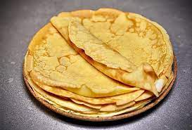

French Crepes Recipe

Ingredients:
- 1 cup all-purpose flour
- 2 eggs
- 1/2 cup milk
- 1/2 cup water
- 1/4 tsp salt
- 2 tbsp butter, melted
Instructions:
- In a large mixing bowl, combine the flour, eggs, milk, water, salt, and melted butter. Mix until smooth.
- Let the batter sit for at least 30 minutes, or up to 2 hours, to allow it to thicken.
- Heat a small non-stick skillet over medium heat.
- Pour about 1/4 cup of batter into the skillet, tilting the skillet to evenly distribute the batter.
- Cook the crepe for about 2 minutes, until the bottom is golden brown. Flip and cook for an additional 1-2 minutes on the other side.
- Repeat with remaining batter, stacking the cooked crepes on a plate as you go.
- Serve warm with your favourite fillings such as Nutella, fresh fruits, or savory fillings like cheese and ham.